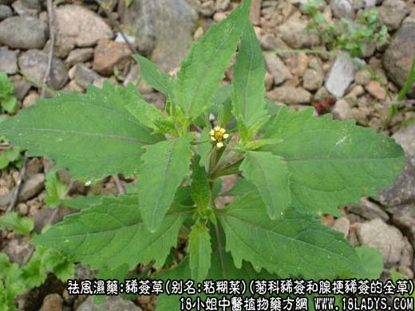
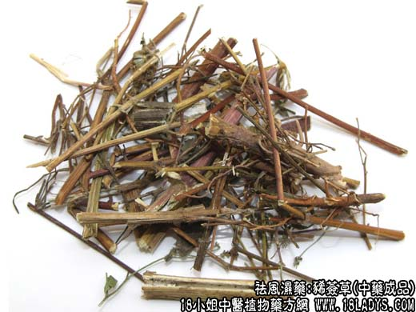

原文连接:https://www.daquan.com/post/2058.html



为较常用中药，始载《名医别录》，列为下品。
别名：粘糊菜，绿签草。
来源：为菊科植物豨莶和腺梗豨莶或少毛豨莶的全草。均为野生。
豨莶：一年生草本，茎高达一米，上部分分枝常呈复二歧状，密披短柔毛。叶对生，纸质，三角状卵形，边缘具不规则浅裂或粗齿，两面披柔毛，掌状三脉及网脉明显，上部叶渐小。头状花序多数于枝端排成具叶的圆锥花序，花梗长2～4厘米，密披短柔毛；总苞阔钟状，总苞片二层，背面密披顶端球状膨达的腺毛，雌花花冠舌状，两性花花冠管状。瘦果倒卵形，有四棱。
腺梗豨莶：与豨莶区别处：茎部多分枝，具纵棱，紫褐色，被柔毛和糙毛。叶对生，卵形，基部阔楔形，下延成叶柄之翼，边缘有尖头的粗齿，上部叶渐小成披针形，头状花序、花梗较长，密生腺毛。
少毛豨莶：茎较细弱，无腺毛，叶片卵形，边缘具规则锯齿。
产地：全国各地。
性状鉴别：茎直、略呈方形，扁方形或六棱柱状。直径0.3～1.5厘米，表面紫棕色或黄绿色，有纵沟及细顺纹；被有灰白色柔毛或少毛，节明显，略膨大。质脆易断，断面黄白色或带绿色，叶片多破碎不全，灰绿色。茎顶或叶腋间可见黄色头状花序，外有匙形的总苞，总苞上有点状的腺毛。气微味微苦。以枝嫩，叶多，色青绿，无根者为佳。
主要成分：含豨莶苦味甙、生物硷。
功效与作用：祛风湿，降血压。动物实验证实本品与臭梧桐组成的复方（豨桐丸）对实验性关节炎有明显抗炎作用。又前人说本品能益气明目。实际上只是燥血祛湿之品，并没有什么补性。
泡制：切咀生用。
性味：苦寒
归经：入肝肾经。
功能：去风湿，强筋骨。
主治应用：主要用于治疗四肢风湿痹痛，尤其腰膝冷痛，代表方为豨莶丸和豨桐丸。据临床观察，豨莶丸治慢性风湿性关节炎、类风湿性关节炎效果较好，急性发作合并呼吸道感染、呼吸气候粗、咳嗽、舌苔厚白、唇干有热者用之亦可。但较重的风湿性关节炎之则收效不大。豨桐丸主治一般风湿引起的筋骨酸痛。此处，动物实验发现豨莶的浸液能降低血压。临床上近年来也已试用豨莶治高血压，对兼有四肢麻木、腰膝无力者较适宜，可单用豨莶9～15g前汤代茶；或配夏枯草等制丸服食，方如豨莶丸，此方对肝阳上亢，有头痛、头晕、目眩、脚麻的高血压患者更合适。
用量：6～30g。
处方举例：1、豨莶丸（张咏方）：豨莶叶和嫩枝经数次蒸晒后，微焙为末，炼蜜丸，每服9g早、晚用温开水或米汤送服(能饮酒者可用少量酒送)。
2、豨桐丸（成药）：每日服2次，每次6～9g或按以下配方：豨莶草240g，臭梧桐500g，共研细末，炼蜜为丸如梧桐子大，早晚各9g用米汤（或温开水）送服。
3、豨夏丸：豨莶草90g，夏枯草90g，龙胆草15g，共研细末，炼蜜为丸：早晚各9g开水送服。
注：1、广东、广西有一同名草药豨莶草，为唇形科植物防风草（秽草，落马衣），与该品及全国习用的豨莶草疗效不同，不得混用。
2、云南（昆明）以唇形科植物糙苏作豨莶草。以上二种，均与正文所述的豨草不同，应注意区别。